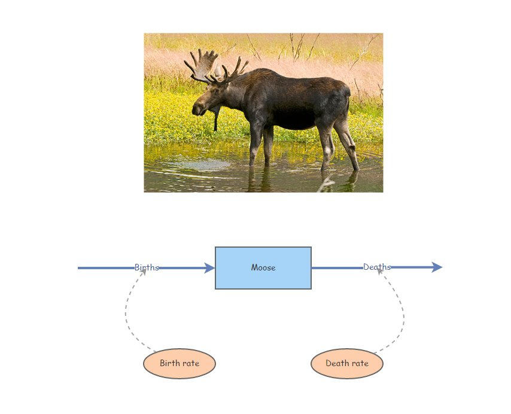
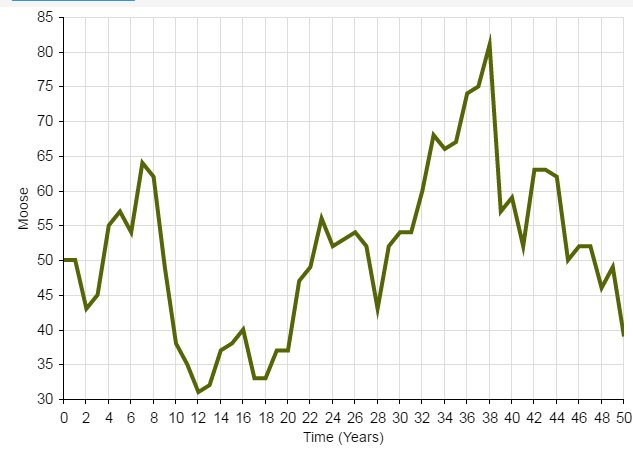
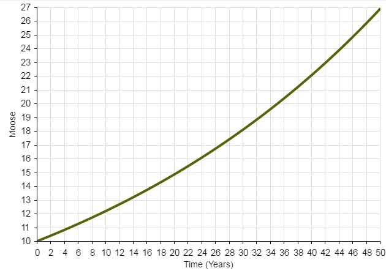

Population Viability Analysis (PVA)
InsightMaker: a simulation modeling framework for dynamic systems!
InsightMaker is a web-based visual programming language for modeling the dynamics of inter-connected systems.
Any dynamic system (like a wildlife population) essentially consists of [Stocks] and [Flows].
A [Stock] simply represents a quantity of something. The [Stock] changes over time ONLY via [Flows In] or [Flows Out].
A [Stock] of stuff increases over time via what [Flows] in. Imagine our stock represents Moose!
Moose Births would then be the input [Flow] to the population of Moose over time.
A [Stock] of stuff decreases over time via what [Flows] out. For example, Moose Deaths could represent the [Flow] out of the population of Moose.
If the [Flow] into the stock is larger than the [Flow] out of the stock, then the [Stock] increases over time.
If the [Flow] out is larger than the [Flow] in, then the [Stock] decreases over time.
If the [Flow] in equals the [Flow] out then the amount in the [Stock] will not change over time. In this case, the system is in equilibrium.
A basic simulation model
It is often stated that “all models are wrong, some are useful” (attributed to statistician George Box).
This demonstration model is wrong, and not super useful! But it’s a start!
Simple stock and flow model!
- Open up InsightMaker. If you have never used it before you need to sign up first with a username and password. InsightMaker is free!
- Click on this link to load up the first population modeling demo.
- In the upper right-hand corner of the screen, click on the “Clone Insight” link at the top and click on the “Clone” button on the following screen (so you can make edits to this model!). If you want, you can change the name of the model by clicking on the white space anywhere in the workspace and then clicking the “Edit Info” button on the left-hand context menu.
- Now click Run Simulation. You have run your first population simulation!
Q: What is the first thing you would like to change to make the model more realistic?
A more realistic model: exponential growth!
- Now let’s assume that per-capita birth and death rates in the population are constant across time. This way, if the population is bigger, more individuals will be added to the population in the next time step, making the population even bigger! This is a positive feedback!
Click on this link to load up the next population modeling demonstration.
- In the upper right-hand corner of the screen, click on the “Clone Insight” link at the top and click on the “Clone” button on the following screen (so you can make edits to this model!). If you want, you can change the name of the model by clicking on the whitespace anywhere in your InsightMaker workspace and then clicking the “Edit Info” button on the left-hand context menu.
Your model should look something like this:

Click on the two [Flows] (Births and Deaths) and note the equation displayed on the right-hand menu. Do these equations make sense?
Make sure the initial number of moose is set to 50, the birth rate is set to 0.5, and the death rate is set to 0.4. Now click [Run Simulation]. How would you describe the results?
Q: what happens if you set the birth rate equal to the death rate?
Q: what happens if you set the birth rate less than the death rate?
One of the most fundamental quantities in population ecology is called the “intrinsic rate of growth” or r. r is simply the difference between birth and death rate:
\(r=birth\ rate-death\ rate\)
Q: What is the intrinsic rate of growth for this population (when birth rate is set to 0.5 and the death rate is set to 0.4)?
Q: What is the next thing you would like to change to make the model more realistic?
An even more realistic model!!
Which one of these figures is most likely to be from a real wildlife population??

OR

Wildlife populations fluctuate over time!
… And these fluctuations are often difficult to predict!
That is to say…
The future is uncertain!
All ecological systems are full of uncertainty. We all know it intuitively. But what exactly do we mean by that? And how can we deal with it? How can we incorporate it into our models?
Q: if you were to re-run the basic population model you just made in InsightMaker ten times, how many different results would you get?
When a model outcome is the same every time (when starting with the same input values) we say that the model is deterministic.
BUT… ecological systems (e.g., dynamic populations) have inherent variability.
We can’t predict with certainty whether or not an individual will mate, or die.
We can’t be certain whether next year or the year after that will be a good year or a bad year for offspring production or mortality!
The key is to embrace uncertainty. As population ecologists, we have some tricks to help us manage and account for unpredictable variation in our study systems:

How to model uncertainty
Typically, we ‘embrace uncertainty’ in our models by incorporating random-number generators. These types of simulation models are called stochastic models.
When we incorporate random processes into models, the result will be different each time we run the model!
When we use stochastic models, we often want to run lots of replicates. Each replicate represents a possible future.
We can then interpret the cloud of possible futures rather than just the results from a single model run!

Here we see that the population went extinct three times out of a total of 50 replicates.
Random number generation
To ensure that each model run (replicate) – or each year of each model run – is different from one another, we need to include at least one random number generator in our models!
A random number generator is like a box of (potentially infinite) possible numbers – a lottery ball machine for example! Each time we want a new number we reach in and pull one out randomly, record the number, put it back in and shake it up again.
Return to InsightMaker- add randomness!
The term stochasticity just means randomness. A stochastic population model is a model with one or more random number generators included!
- Click on this link to load up the next population modeling demonstration.
- In the upper right-hand corner of the screen, click on the “Clone Insight” link at the top and click on the “Clone” button on the following screen (so you can make edits to this model!). If you want, you can change the name of the model by clicking on the whitespace anywhere in your InsightMaker environment and then clicking the “Edit Info” button on the left-hand context menu.
- Make sure the Birth rate is set to 0.5 and Death rate is set to 0.4. Set initial abundance to 10. Under the “Settings” menu make sure the model is set to run for 20 years.
- Run the simulation. What does it look like?
- Use the “Sensitivity Testing” tool (in the “Tools” menu, upper right corner) to run the model 100 times. Choose your [Population] (Moose) as the “Monitored Primitive”. View the results!
Now, change the initial abundance to 500 and re-run the “Sensitivity Testing” tool.
Q: what key differences do you notice when you initialize the population with 10 individuals vs 500 individuals??